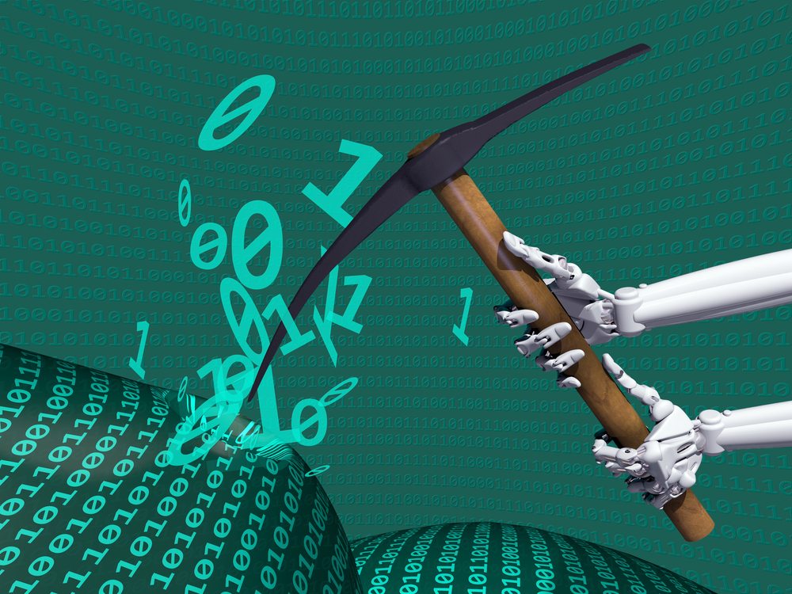
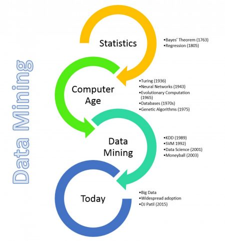
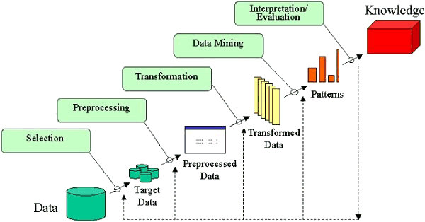
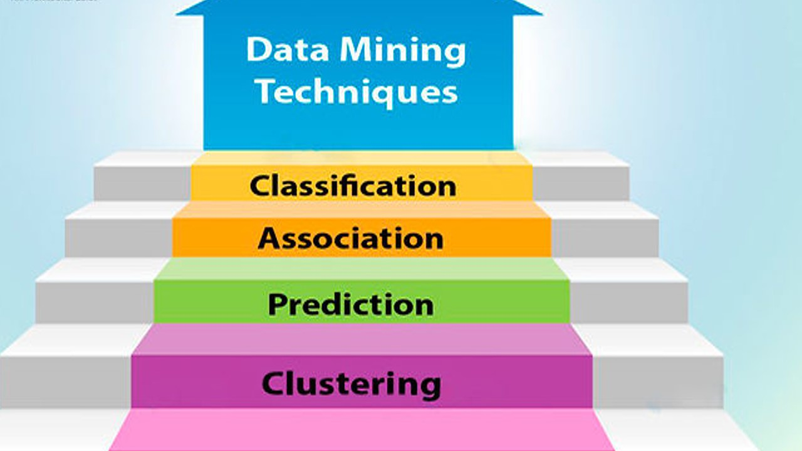

Data mining is the process of extracting patterns from data , Data mining is becoming an increasingly important tool to
transform, this data into information,

It is commonly used in a wide, range of profiling practices, such as marketing, surveillance, fraud detection and scientific discovery, Data mining can be used to uncover, patterns in data but is , .often carried out only on samples of data.
The mining process will be ineffective if, the samples are not a good, representation of the larger body of data.
Data mining cannot discover patterns that may be present in the larger body of data if those patterns are not present in the sample being "mined".
History of Data mining

You might think the history of Data Mining started very recently as,
it is commonly considered with new technology. However data mining is a discipline with a long history
. It starts with the early Data Mining methods Bayes’ Theorem (1700`s)and Regression analysis (1800`s) , which were mostly identifying patterns
in data.
What is mean By Data Mininng
Data mining has applications in multiple fields, like science and research.
As an application of data mining, businesses can learn more,
about their customers and develop more effective strategies , related to various business functions and, in turn leverage resources in a more optimal and insightful manner.
This helps businesses be closer to their objective and make better decisions. Data mining involves effective data collection and
warehousing as well as computer processing.
For segmenting the data and evaluating the probability of future events,
data mining uses sophisticated mathematical algorithms. Data mining is also known as Knowledge Discovery in Data (KDD).

Working of Data Mining
There is an abundance of data across various industries, but it only becomes useful when it is transformed into information.
The method of extracting information from enormous data is known as data mining.
Data mining find its application across various industries such as market analysis, business management,
fraud inspection, corporate analysis and risk management, among others,
This article takes a short tour of the steps involved in data mining.
Techniqes of Data Mining
1.Regression
Regression is a data mining technique used to predict a, range of numeric values (also called continuous values), given a particular dataset. For example, regression might be used to predict the cost of a product or service, given other variables.

2.Classification
It is a Data analysis task, i.e. the process of finding a model that describes and distinguishes data classes and concepts.
Classification is the problem of identifying to which of a set of categories (subpopulations),
a new observation belongs to, on the basis of a training set of, data containing observations and whose categories membership is known.
3.Clustering
The process of making a group of abstract objects into classes of similar objects is known as clustering.
In the process of cluster analysis, the first step is to partition the set of data, into groups with the help of,
data similarity, and then groups are , assigned to their respective lables.
4.Association
In basic terms, association rules , present relations between items.
They are statements that help to discover , relationships between data in a database.
An association rule can be defined as an implication of the, form A → B. Here ‘A’ is called premise,
which represents a condition that must be true for ‘B’ to hold. ‘B’ is a conclusion that happens ,
when ‘A’ is true. ‘A’ is called antecedent and ‘B’ is called consequent.
An antecedent is an element found in ,data where as a consequent is
found in combination with the antecedent. The rule A → B can be interpreted as: If A happens, B happens,
This is a very general interpretation; the accurate interpretation depends on the domain.
codesyouth is platform used for Multinational company recruitment process and brief history about that and also
about seminar topic for computer science student.Codesyouth
is a project developing under Developer student club.